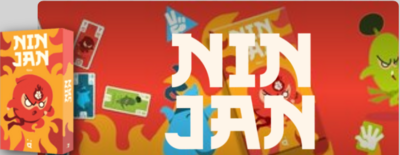

Ninjan
Board Game Arena 官方规则文档

2-5 players - Duration 4 minutes - Complexity 1/5
Presentation
Ninjan battles, Chifoumi style.
Object of the game
The goal of the game is to recruit the most high-value ninjan cards. The sum of these values must be the highest to win the game.
Preparation
Each player starts with a hand of 9 cards belonging to one of the three suits: Rock (red) / Paper (green) / Scissors (blue), with values ranging from -6 to 10.
Place 3 cards face up on the table in 3 separate piles; these are the first 3 targets.
Game Round
Each turn, each player chooses a card from their hand and waits for everyone else to do the same.
These cards are all revealed simultaneously and resolved according to the following rules:
Starting from the highest value (10) to the lowest (-6), and breaking ties according to the Rock/Paper/Scissors rule, players take turns claiming one of the 3 piles according to the same rule, but without taking the values into account.
Tips: This rule is indicated in the bottom left corner of the screen using a circular image.
A Paper is stronger than a stone, which is itself stronger than Scissors, which is itself stronger than a Paper...
If a player plays the "8 Stone," for example, they must claim one of the piles with a Scissors card on top.
They place the cards from the recruited pile face up in front of them, then start a new pile by playing their "8 Stone."
If they cannot recruit a pile (without Scissors on top), they place their played card on an existing pile of their choice, leaving all the pile numbers visible.
Once all 9 cards in hand have been played, add up the values of the cards the players have recruited.
The player with the highest score wins the game.
Credits
Designer: 6jizo
Artist: Crocotame
Publisher: Helvetiq